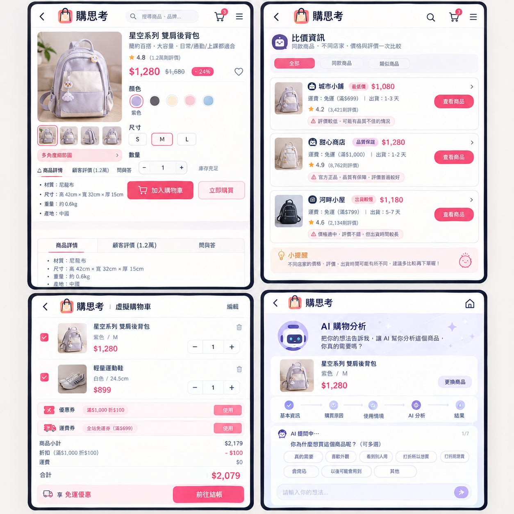

透過線上模擬購物與 AI 辯論，在結帳前為每筆衝動消費做出理性判決
「只想逛一下，結果購物車卻越加越多？」
你是否也曾經因為看到喜歡的商品，告訴自己「先買再說」，結帳後才發現買了一堆根本用不到的東西？購物帶來的快樂往往只有一瞬間，收到帳單時卻只剩下後悔。如果有一種方式，能讓你不用花錢，也能盡情享受購物的過程，你會不會想試試看？
現今網路購物越來越方便，從衣服、鞋子到各種生活用品，只要滑幾下就能直接下單。
商品好看、正在打折，或只是當下突然很想要，都可能成為購買的理由。冷靜後才發現，家裡早已有類似的東西。
「購思考」將購物慾望從現實消費轉移到虛擬世界，讓使用者先享受購物，再決定是否真的需要。你可以像使用一般購物平台一樣逛商品、挑選顏色與尺寸、加入購物車及比價，在不花錢的情況下享受完整購物過程。

完整模擬逛街、挑色、選尺寸與加入購物車，先滿足購物慾，不急著花錢。
比較不同店家的價格、評價與出貨資訊，讓「便宜」不再是唯一判斷標準。
透過「為什麼想買？」「家裡有類似的嗎？」等問題，重新檢視購買理由。
AI 整理分析結果，判斷商品較偏向「需要」或「想要」，並整理可接受價格範圍。
讓購物不再只是按下結帳，多留一次思考機會。
購物可以很快，但決定要不要買，可以慢一點。
「以前我最常跟自己說的就是『才幾百塊，買了應該沒關係』，結果幾百塊累積起來，月底才發現錢不知道花去哪裡。使用『購思考』後，我會先把想買的東西放進虛擬購物車，挑顏色、選尺寸、逛來逛去，光是這樣就能滿足一部分購物慾，再讓 AI 問我一輪。它問到『如果今天不買，生活會受到什麼影響？』時，我突然發現——好像真的沒有影響，原來很多東西我只是當下很想要，並不是真的需要。現在我還是可以逛、可以挑、可以享受購物的感覺，但荷包終於不用一直受傷了。」